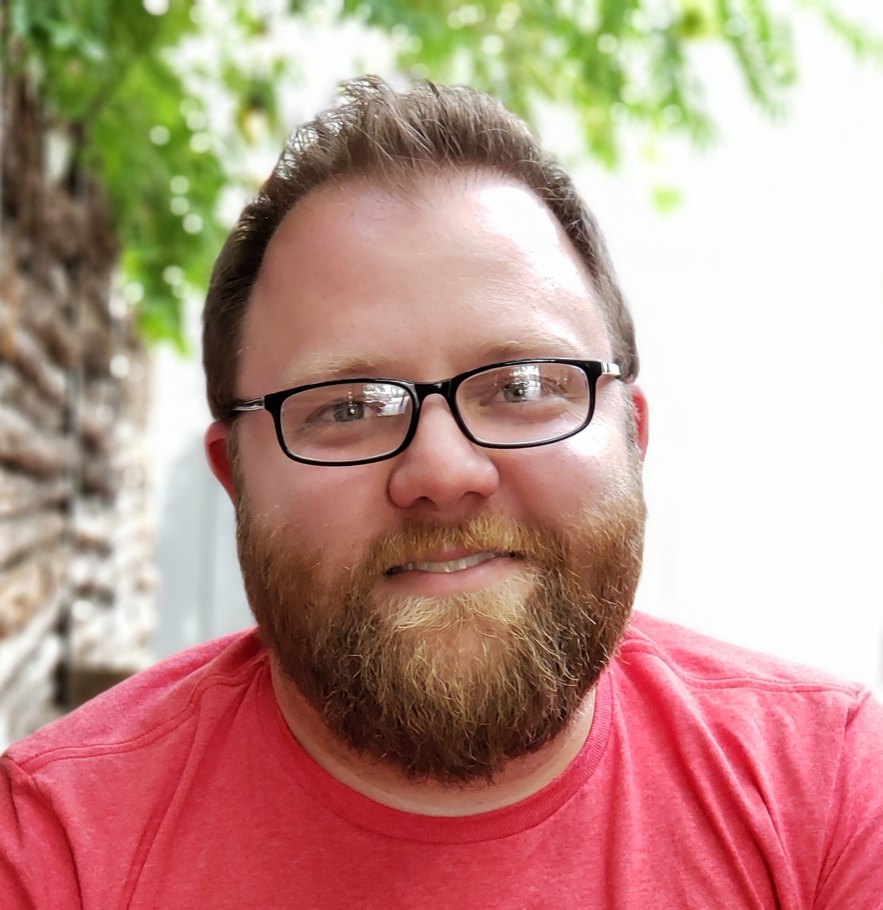

Hey there! My name is Eddie Villarreal and I am studying to be a web developer.
Originally from Laredo, Texas, I moved to San Antonio in 2001 and have been here ever since.
As an undergrad at UTSA I studied technology but soon fell into an operations management position for a medical
organization and realized I was rather good at it. Throughout my 15-year career in health and wellness management
I was still dabbling in the tech field here and there and was usually the go-to person for most of the software
upgrades and new software integration projects at my company. Finally, my love for tech boiled over and realized
I wanted to make a career change. I decided to take the leap and enrolled in the UTSA Coding Bootcamp.
So far, I am finding the projects and classes fun and intriguing. I am hoping to learn and improve my skills
over the course of the program to build a portfolio to impress prospective employers and learn the skills necessary
to be a full stack developer. I am confident in achieving my goals because I know I can be good at this.
So far, the decision to change career paths and pursue web development has been fun, exciting, terrifying and I am
grateful I did it because sometimes you have to just take a deep breath and jump.